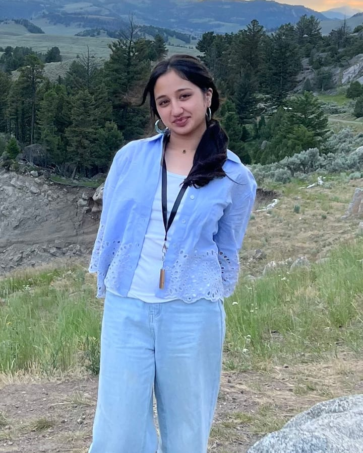
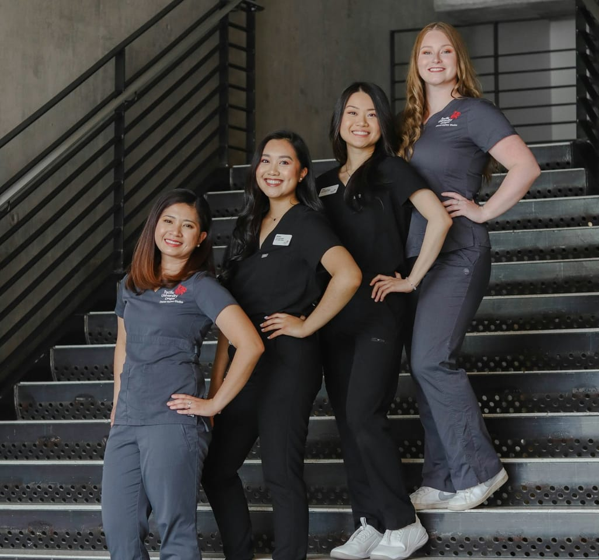
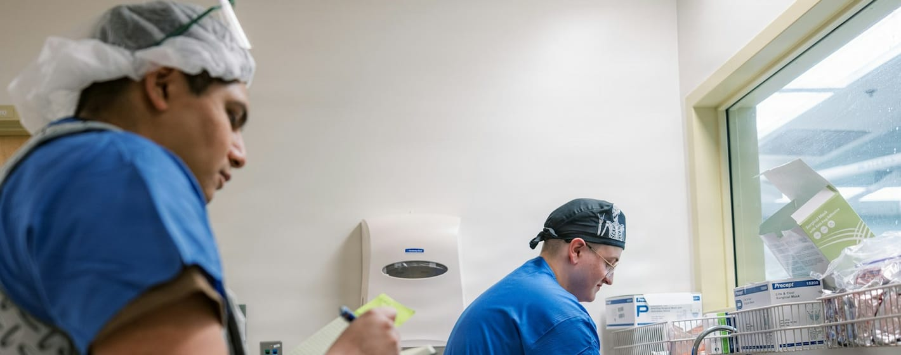

How to find a physician, ask the right way, show up prepared, and learn something real from every day in the clinic.
By Zoha WaheedBuilt from a survey of 43 practicing physicians. 2026.
Why I wrote this guide and how to use it

I'm Zoha Waheed. I walked into my first endocrinology clinic knowing little more than what Google had told me the week before.
Since then I have shadowed seven physicians across four specialties. Even once I had those days, I found it difficult to get the most out of them.
So I surveyed 43 practicing physicians about what stops them from hosting high schoolers and what makes a shadowing day worth it. I also read five peer-reviewed studies on how students learn in the clinic.
This guide turns what they told me into steps you can follow.
Sections 1 to 3 show you why doctors say no, where to look, and how to ask.
Sections 4 to 6 cover paperwork, what to wear, and the privacy rules.
Sections 7 to 9 cover what to watch, what to ask, and what to write down.
Know the barriers before you ask
A doctor who turns you down is rarely saying no to you. When I asked 43 physicians what gets in the way of hosting a high school student, their answers were about time, missing structure, and hospital rules. Once you know the obstacle, you can write a request that removes it.
Share of 43 physicians selecting each
Request one half day. Offer three dates and let the office choose.
Say what you hope to observe and that you will follow their lead.
Call the front desk and ask who approves student observers.
Start with people who already know you
Most shadowing days start with a personal connection. A physician is far more likely to answer a student they have some tie to than a stranger. Work outward from the people closest to you, and keep track of everyone you contact.
Your pediatrician, family doctor, or dentist already knows you. Ask at your next visit.
Ask parents, relatives, neighbors, and friends' parents who they know in medicine.
School counselors and science teachers often know alumni and local physicians.
Small clinics have fewer layers of approval than large hospitals. Call the office manager.
Many hospitals route student observers through a volunteer or education office.
Groups such as HOSA and local health career programs can connect students with hosts.
| Physician or office | Specialty | How I know them | Date asked | Follow-up | Answer |
|---|---|---|---|---|---|
High school students shouldn't have to endlessly email physicians with no hope of finding any shadowing opportunities.
Zoha Waheed
A short, specific request is easier to say yes to
Physicians read email between patients. Keep your request under 150 words, say exactly what you are asking for, and answer their worries before they have to raise them.
Subject: High school student asking to shadow for a half day
Dear Dr. ,
My name is and I am a at High School. suggested I contact you. I am considering a career in medicine and would like to learn what a day in looks like.
Would you allow me to observe for one half day? I am free on , , or , and I can work around your schedule. I understand patient confidentiality and will complete any forms your office requires.
Thank you for considering it.
Sincerely,
Phone:
Reply to your own email with two sentences. Then call the office and ask for the manager.
No answer usually means no time. Thank them and contact the next name on your list.
Repeat the date, time, address, dress code, and who to ask for when you arrive.
"Hello, my name is . I am a high school student interested in medicine. Could you tell me who handles requests to observe a physician, and the best way to reach them?"
Arrive ready and you remove a doctor's biggest doubt
Student preparedness worried 56% of the physicians who had never hosted a student, against 22% of those who had. The doctors asked for the fix themselves: students who arrive already oriented.
Share of 43 physicians requesting each resource
Dress like you work there
Patients will assume you are part of the team, so dress the part. Unless the office tells you otherwise, wear business casual. Save the scrubs for when someone hands them to you.

Some surgical settings hand observers scrubs on arrival. Arrive in business casual and change on site.
A white coat tells patients you are a clinician. Observers should not wear one.
If the office gives you a visitor or observer badge, wear it where people can read it.
The rules that keep you welcome
Every patient you see is trusting the room with private information. In the United States that trust is protected by a federal law called HIPAA. Half of the physicians I surveyed named privacy as a barrier to hosting students, so show them you take it seriously.
The federal law that protects the privacy of a patient's health information.
Protected health information: anything that could identify a patient, from a name to a photo.
Only the people caring for a patient should hear the details. That rule applies to you too.
"Hello, my name is . I am a high school student observing Dr. today. Is it all right with you if I stay in the room?"
If the patient says no, smile, thank them, and wait outside. It is their right, and physicians notice students who handle it well.
Watch how a physician thinks
Students often hope for a dramatic procedure. Physicians told me the value lies elsewhere: in watching patient care up close and understanding the reasoning behind it. Procedures ranked near the bottom.

Share of 43 physicians selecting each factor
Ask between patients
More than half of the physicians I surveyed said the ability to ask questions is what makes shadowing meaningful. Write yours down before you arrive. Hold them until the patient has left, then ask while the visit is fresh.
Save questions for the hallway or the end of the day, never in front of a patient.
Questions about reasoning teach you more than questions about facts you can look up.
On a packed day, pick your best two questions and write the others down for later.
Write it down while it is fresh
The studies I read agreed on one habit: reflection. Students who put their clinical experiences into writing analyze what they saw more carefully and notice what they still need to learn. Give yourself fifteen minutes the same evening.
Date, physician, and specialty
What did I observe today? (no patient names)
What surprised me?
What did I learn about how this physician makes decisions?
What questions do I still have?
Could I see myself doing this work? Why or why not?
Dear Dr. ,
Thank you for letting me shadow you on . Watching you taught me . I especially appreciated the time you took to explain .
The day made me more certain that . Thank you again for your generosity.
Sincerely,
Your checklist, your log, and the research behind this guide
Physicians want to teach. Arrive prepared, ask good questions, and write down what you saw, and you will leave with a clearer answer about medicine than you came in with.
| Date | Physician | Specialty | Hours | One thing I learned |
|---|---|---|---|---|
Developed by Zoha WaheedShadow Pre-MD. Free for any student to use and share. Hospital rules vary, so always follow the instructions of the office hosting you.